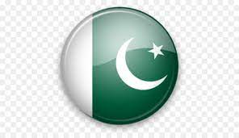

The Afghanistan national cricket team, also known as "Afghan Atalan," represents Afghanistan in international cricket. The team is governed by the Afghanistan Cricket Board (ACB). Afghanistan gained full ICC membership in 2017 and has made significant progress in the cricketing world.
Key Players:
Rashid Khan - A world-class leg-spinner and a key asset for Afghanistan's bowling attack.
Mohammad Nabi - An experienced all-rounder known for his big-hitting and off-spin bowling.
Rahmat Shah - A reliable batsman and Afghanistan's first Test centurion.
Team Captain: Asghar Afghan
Recent Achievements:
Qualified for the ICC Cricket World Cup 2019 held in England.
Won their first Test match against Ireland in 2019.
Registered their maiden Test victory against Bangladesh in 2019.
Upcoming Fixtures:
T20 World Cup 2023 - Afghanistan will face Australia in the opening match on October 17, 2023.
Test Series - Afghanistan will tour South Africa for a Test series starting in November 2023.
Australia National Cricket Team
The Australia national cricket team, also known as "The Baggy Greens," is one of the most successful cricket teams in history. Represented by Cricket Australia, the team has won multiple ICC Cricket World Cups and The Ashes series against England.
Key Players:
Steve Smith - A prolific batsman and former captain, known for his unorthodox style and consistency.
Pat Cummins - The current pace spearhead and one of the best fast bowlers in the world.
David Warner - An explosive opening batsman with a knack for scoring big runs.
Team Captain: Aaron Finch
Recent Achievements:
Won the ICC Cricket World Cup in 2015 and 2019.
Regained The Ashes by defeating England in the 2017-2018 series.
Secured a Test series victory in India in 2021.
Upcoming Fixtures:
T20 World Cup 2023 - Australia will face Afghanistan in the opening match on October 17, 2023.
Test Series - Australia will host New Zealand for a Test series starting in December 2023.
Bangladesh National Cricket Team
The Bangladesh national cricket team, also known as "The Tigers," represents Bangladesh in international cricket. The team is governed by the Bangladesh Cricket Board (BCB). Although they achieved Test status in 2000, Bangladesh has made steady progress in all formats of the game.
Key Players:
Mushfiqur Rahim - A reliable middle-order batsman and former captain.
Shakib Al Hasan - An exceptional all-rounder known for his batting and left-arm spin bowling.
Tamim Iqbal - A stylish left-handed opener and the leading run-scorer for Bangladesh in ODIs.
Team Captain: Mahmudullah Riyad
Recent Achievements:
Reached the ICC Cricket World Cup quarter-finals in 2015.
Won their first-ever Test match against Australia in 2017.
Defeated West Indies in a Test series in 2021, securing their first series win against the Caribbean team.
Upcoming Fixtures:
T20 World Cup 2023 - Bangladesh will face India in their opening match on October 18, 2023.
ODI Series - Bangladesh will tour Pakistan for an ODI series starting in January 2024.
England National Cricket Team
The England national cricket team, also known as "The Three Lions," represents England and Wales in international cricket. The team is governed by the England and Wales Cricket Board (ECB). England is one of the oldest cricketing nations and has a rich history in the sport.
Key Players:
Joe Root - The team captain and an accomplished batsman known for his elegant strokeplay.
Jofra Archer - A fast bowler with a lethal bouncer and pinpoint accuracy.
Ben Stokes - An exceptional all-rounder, equally effective with both bat and ball.
Team Captain: Joe Root
Upcoming Fixtures:
Test Series - England will tour Australia for the Ashes series starting in November 2023.
ODI Series - England will host Pakistan for an ODI series starting in January 2024.
Ireland National Cricket Team
The Ireland national cricket team, also known as "The Boys in Green," represents Ireland in international cricket. The team is governed by Cricket Ireland. Ireland gained ODI (One Day International) status in 2007 and has been making steady progress in the cricketing world.
Key Players:
Paul Stirling - A powerful opening batsman and one of Ireland's leading run-scorers.
Kevin O'Brien - An experienced all-rounder and the hero of Ireland's famous World Cup win against England in 2011.
Boyd Rankin - A tall and pacey fast bowler with the ability to trouble top batsmen.
Team Captain: Andy Balbirnie
Upcoming Fixtures:
ODI Series - Ireland will tour Sri Lanka for an ODI series starting in August 2023.
T20I Series - Ireland will host New Zealand for a T20I series starting in September 2023.
New Zealand National Cricket Team
The New Zealand national cricket team, also known as "The Black Caps," represents New Zealand in international cricket. The team is governed by New Zealand Cricket (NZC). New Zealand is known for producing competitive sides with a never-give-up attitude.
Key Players:
Kane Williamson - The team captain and a world-class batsman, known for his calm demeanor and consistent performances.
Trent Boult - A skillful left-arm fast bowler and a key component of New Zealand's pace attack.
Ross Taylor - A senior batsman with a wealth of experience and New Zealand's leading run-scorer in ODIs.
Team Captain: Kane Williamson
Upcoming Fixtures:
T20 World Cup 2023 - New Zealand will face India in their opening match on October 15, 2023.
Test Series - New Zealand will tour Bangladesh for a Test series starting in November 2023.
Pakistan National Cricket Team
The Pakistan national cricket team, also known as "The Shaheens," represents Pakistan in international cricket. The team is governed by the Pakistan Cricket Board (PCB). Pakistan is known for producing talented fast bowlers and passionate cricket fans.
Team Captain: Babar Azam
Key Players:
Babar Azam - The team captain and a stylish right-handed batsman, known for his elegant strokeplay.
Shaheen Afridi - A left-arm fast bowler and a rising star in Pakistan's cricketing ranks.
Mohammad Rizwan - A wicketkeeper-batsman and a valuable asset to the team in all formats of the game.
Recent Achievements:
Secured a Test series victory against England in England in 2021.
Reached the semi-finals of the ICC Champions Trophy in 2004, 2009, and 2017.
Defeated India in the ICC Champions Trophy final in 2017 to win the tournament.
Upcoming Fixtures:
T20 World Cup 2023 - Pakistan will face South Africa in their opening match on October 19, 2023.
Test Series - Pakistan will tour Sri Lanka for a Test series starting in December 2023.

South Africa National Cricket Team
The South Africa national cricket team, also known as "The Proteas," represents South Africa in international cricket. The team is governed by Cricket South Africa (CSA). South Africa has produced some of the greatest cricketers in history and is known for its aggressive and competitive style of play.
Team Captain: Quinton de Kock
Key Players:
Quinton de Kock - The team captain and a hard-hitting left-handed batsman.
Kagiso Rabada - A fiery fast bowler with raw pace and the ability to trouble any batsman.
Faf du Plessis - An experienced batsman and a former captain, known for his leadership on and off the field.
Recent Achievements:
Reached the semi-finals of the ICC Cricket World Cup 2015 and 2019.
Defeated Australia in Australia to win the Test series in 2016.
Secured a Test series victory against India in India in 2019.
Upcoming Fixtures:
T20 World Cup 2023 - South Africa will face Pakistan in their opening match on October 19, 2023.
Test Series - South Africa will tour India for a Test series starting in January 2024.
West Indies National Cricket Team
The West Indies national cricket team, also known as "The Windies," represents a collection of Caribbean nations in international cricket. The team is governed by Cricket West Indies (CWI). West Indies has a rich cricketing history and has produced some of the most destructive batsmen and fearsome fast bowlers in the game.
Team Captain: Kieron Pollard
Key Players:
Kieron Pollard - The team captain and a powerful all-rounder, known for his big-hitting ability.
Jason Holder - A tall and skillful fast bowler and a former captain of the team.
Chris Gayle - A legendary left-handed batsman, known for his explosive batting in T20 cricket.
Recent Achievements:
Won the ICC T20 World Cup in 2012 and 2016, showcasing their T20 prowess.
Defeated England in a Test series in England in 2017, showing glimpses of their past dominance.
Qualified for the Super 12 stage of the ICC T20 World Cup 2023.
Upcoming Fixtures:
T20 World Cup 2023 - West Indies will face Ireland in their opening match on October 18, 2023.
Test Series - West Indies will tour Australia for a Test series starting in January 2024.
Zimbabwe National Cricket Team
The Zimbabwe national cricket team represents Zimbabwe in international cricket. The team is governed by Zimbabwe Cricket (ZC). Zimbabwe has faced challenges in recent years, but it has produced talented cricketers who have made their mark on the world stage.
Team Captain: Sean Williams
Key Players:
Sean Williams - A left-handed all-rounder and the team's captain in limited-overs formats.
Brendan Taylor - A seasoned wicketkeeper-batsman and one of Zimbabwe's most reliable batsmen.
Tendai Chatara - A pace bowler with the ability to swing the ball and take crucial wickets.
Recent Achievements:
Qualified for the ICC Cricket World Cup 2019 held in England.
Secured a Test series victory against Bangladesh at home in 2020.
Won the T20I series against Sri Lanka at home in 2021.
Upcoming Fixtures:
T20 World Cup 2023 - Zimbabwe will face West Indies in their opening match on October 22, 2023.
Test Series - Zimbabwe will tour Bangladesh for a Test series starting in November 2023.